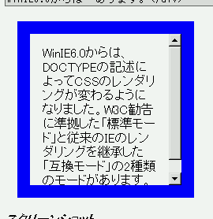

overflow: auto; を指定した要素に対して設定された幅、高さ、マージン、パディングのプロパティが正しく反映されない。
overflow: auto;
<div style="overflow:auto; width:10em; height:10em; padding:1em; margin:1em; border:1em solid blue;"> WinIE6.0からは…あります。</div>
WinIE6.0での表示（標準モード）
WinIE6.0ではすべてが正しく反映されています。